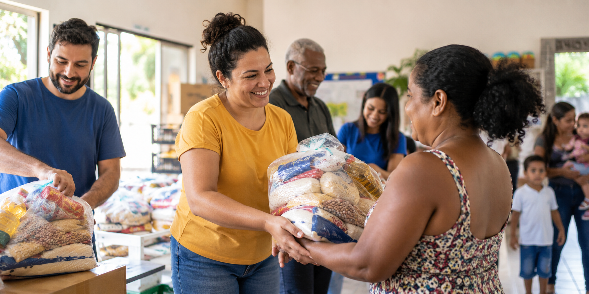

Quem somos

O Projeto Novo Amanhã é uma organização sem fins lucrativos dedicada ao apoio de crianças, adolescentes e famílias em situação de vulnerabilidade social.
Nossa missão é promover oportunidades por meio de ações educacionais, culturais e de assistência social.
Como ajudar
Participe de nossas campanhas, faça uma doação ou cadastre-se para atuar como voluntário.
Quero ser voluntárioContato
E-mail: contato@novamanha.org
Telefone: (11) 4747-4747
Rua da Solidariedade, 100 – Suzano/SP